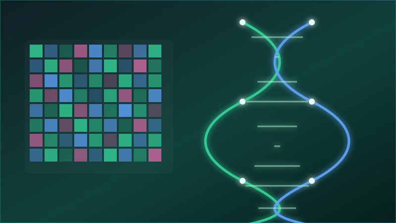

Formación
Último curso del Grado en Ingeniería de Inteligencia Artificial. Base sólida en matemáticas, algoritmia y aprendizaje automático.
Disponible para prácticas y proyectos
Soy Iván, Ingeniero de Inteligencia Artificial. Diseño y entreno modelos de machine learning, y los llevo hasta producción con APIs y contenedores para que resuelvan problemas reales.
Quién soy y qué sé hacer, en tres ideas.
Último curso del Grado en Ingeniería de Inteligencia Artificial. Base sólida en matemáticas, algoritmia y aprendizaje automático.
Modelos predictivos sobre datos biomédicos, visión por computador y sistemas de preguntas y respuestas con LLMs.
No me quedo en el notebook: pipelines reproducibles, evaluación honesta y despliegue con Docker y FastAPI.
Cada tarjeta explica el problema, qué construí y el resultado.

BioinformáticaEl problema Miles de genes por paciente y muy pocas muestras: los modelos se sobreajustan.
Qué hice Pipeline de selección de características + validación cruzada estratificada e interpretabilidad con SHAP.
Resultado Clasificador estable y, sobre todo, explicable: se ve qué genes pesan en cada predicción.

Computer VisionEl problema Detectar personas y vehículos en vídeo sin un servidor potente detrás.
Qué hice Red convolucional afinada sobre un dataset propio y optimización del modelo para inferencia ligera.
Resultado Detección fluida en tiempo real con seguimiento entre fotogramas.
 LLMs · RAG
LLMs · RAG
El problema Un modelo de lenguaje solo se inventa respuestas si no conoce tus documentos.
Qué hice Sistema RAG: troceo de documentos, embeddings, base vectorial y recuperación de los fragmentos más relevantes.
Resultado Respuestas con la fuente citada, servidas por una API en FastAPI.
✍️ Sustituye los textos y los href="#" en index.html. Para poner una captura real: guarda tu imagen en assets/ y cambia el src.
Las herramientas con las que trabajo cada día.
De los fundamentos a los sistemas en producción.
Álgebra lineal, probabilidad, algoritmia y estructuras de datos: la base que hace que un modelo se entienda y no sea una caja negra.
Regresión, árboles, ensembles y clustering. Aprendí lo más importante: evaluar bien antes de presumir de métricas.
Convolucionales para imagen y transformers para texto. Proyectos de visión por computador y NLP con PyTorch.
Sistemas RAG, APIs con FastAPI, contenedores y despliegue. Buscando prácticas donde aportar en proyectos reales.
Estoy abierto a prácticas, colaboraciones y proyectos de IA. Respondo rápido.